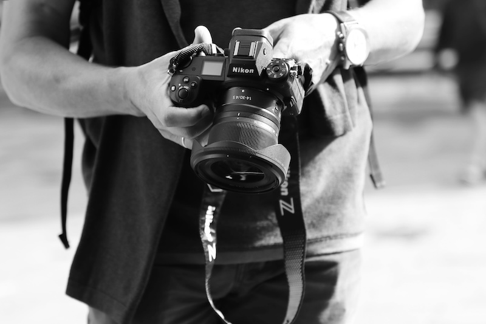

Fotomaraton: Fotoğraf Tutkunlarına Heyecanlı Bir Deneyim
Fotoğrafçılıkla ilgilenenler için hem eğlenceli hem de öğretici bir etkinlik olan fotomaraton, dünya genelinde giderek daha popüler hale geliyor. Adından da anlaşılacağı gibi, bu etkinlik maratonun zorluklarıyla fotoğrafçılığı bir araya getiriyor. Peki, nedir bu fotomaraton, nasıl düzenlenir ve katılımcılar için neler sunar?
Fotomaraton Nedir?
Fotomaraton, belirli bir süre içinde verilen temalara uygun fotoğraflar çekilerek yarışılan bir etkinliktir. Genellikle şehir merkezlerinde düzenlenir ve birkaç saatten birkaç güne kadar sürebilir. Katılımcılar, etkinlik sırasında kendilerine verilen temalara yaratıcı bir şekilde yanıt verecek kareler yakalamaya çalışırlar. Örneğin, temalardan biri “hareket” ise, şehrin dinamizmini yakalayacak bir kompozisyon oluşturmak gerekir.
Fotomaratonun Amacı
Fotomaratonların en büyük amacı, fotoğrafçılara günlük yaşamda yaratıcılıklarını keşfetme fırsatı sunmaktır. Aynı zamanda hızlı düşünme, kompozisyon oluşturma ve teknik becerileri geliştirmeye yönelik eğitici bir yönü vardır. Ayrıca, farklı katılımcıların aynı temaya nasıl farklı açılardan yaklaştığını görmek, fotoğrafçılara ilham verir ve yeni bakış açıları kazandırır.
Fotomaraton Nasıl Düzenlenir?
Fotomaraton düzenlemek isteyenler için birkaç önemli adım:
- Tema ve Süre Belirleme: Etkinlik için temalar önceden belirlenir. Temalar, katılımcıların yaratıcılıklarını zorlayacak nitelikte olmalıdır.
- Kayıt ve Bilgilendirme: Katılımcılar etkinlik başlamadan önce kaydolurlar. Belirli bir başlangıç noktasından hareket edilerek her katılımcıya temasını içeren bir liste verilir.
- Jüri ve Ödüller: Yarışma sonunda, jüri tarafından değerlendirilmek üzere fotoğraflar toplanır ve kazananlar belirlenir. Çoğu etkinlikte en iyi fotoğraflara ödüller verilir.
Fotomaratonlara Kimler Katılmalı?
Fotomaratonlara herkes katılabilir; profesyonel ya da amatör fark etmez. Fotoğrafçılıkla ilgilenen herkes, bu etkinlikten farklı şeyler öğrenebilir. Özellikle yeni başlayanlar için fotomaraton, fotoğrafçılık dünyasına hızlı bir giriş yapma fırsatıdır. Profesyoneller ise yaratıcılıklarını sınırlı bir süre ve tema içinde test etme imkanı bulur.
Fotomaratonlardan Alınacak Dersler
Bir fotomaraton deneyimi, fotoğrafçılara çok şey kazandırır:
- Zaman Yönetimi: Sınırlı sürede, istenen temaya uygun fotoğraflar çekmek katılımcılara hızlı düşünme becerisi kazandırır.
- Yaratıcılığı Keşfetme: Temalara yaratıcı yaklaşımlar geliştirmek, fotoğrafçının kendini ifade etme gücünü artırır.
- Sabır ve Dikkat: En iyi kareyi yakalamak, bazen beklemeyi ve gözlem yapmayı gerektirir. Bu süreç, fotoğrafçının doğaya ve çevresine daha dikkatli bakmasını sağlar.
Türkiye’de Fotomaratonlar
Türkiye’de fotomaratonlar, özellikle büyük şehirlerdeki fotoğraf dernekleri, belediyeler ve sanat kurumları tarafından düzenlenen renkli etkinlikler olarak dikkat çekiyor. Fotomaratonlar, şehirlere ve kültürel mirasa farklı açılardan bakma fırsatı sunarak hem yerel halkın hem de ziyaretçilerin ilgisini çekiyor. Türkiye’de en popüler fotomaraton etkinliklerinden bazıları İstanbul, Ankara, İzmir, Bursa ve Antalya gibi şehirlerde gerçekleşiyor.
Örneğin, İstanbul Fotomaratonu, tarihi yarımada, Galata Köprüsü, Balat gibi kültürel ve tarihi açıdan zengin bölgelerde yapılır. Katılımcılar, genellikle şehir yaşamının, mimarinin ve doğal güzelliklerin harmanlandığı çok sayıda tema ile şehri keşfeder. İstanbul’un büyülü atmosferi, fotomaraton temaları için eşsiz bir zemin sağlar; “Gece ve Gündüz İstanbul” ya da “Modern ve Tarihi İstanbul” gibi temalar, katılımcıları bu iki yüzü bir arada yakalamaya teşvik eder.
Ankara’da düzenlenen fotomaratonlar ise, başkentin resmi yapısı ve tarihi mekanlarını keşfetmeye yöneliktir. Anıtkabir, Ankara Kalesi ve Kurtuluş Savaşı Müzesi gibi ikonik alanlar sıkça tema olarak belirlenir. “Cumhuriyetin İzleri” veya “Başkent Manzaraları” gibi konularla, katılımcılar şehrin kültürel ve tarihî dokusunu farklı perspektiflerden fotoğraflamaya davet edilir.
İzmir Fotomaratonları, sahil boyunca uzanan güzelliklerin yanı sıra Kemeraltı Çarşısı, Alsancak ve tarihi Agora gibi hem turistik hem de yerel yaşamın gözlemlenebileceği alanları içerir. İzmir’in eşsiz Ege kültürü ve denizle iç içe geçmiş günlük yaşamı, fotomaraton temalarında sıkça yer bulur. “Ege’nin Renkleri” ya da “İzmir’in Yüzleri” gibi temalar, katılımcılara hem sokakları hem de insanları tanıma fırsatı sunar.
Bursa Fotomaratonları, tarihî İpek Yolu üzerinde bulunmasından dolayı, Osmanlı mirasını gözler önüne seren eşsiz mekanlarda yapılır. Bursa Ulu Camii, Cumalıkızık köyü ve Yeşil Türbe gibi mekânlarda düzenlenen fotomaratonlarda, “Osmanlı’nın İzleri” gibi temalar öne çıkar. Katılımcılar, tarihî dokuyu yakalama konusunda zorlayıcı ancak bir o kadar ilham verici bir deneyim yaşar.
Antalya’da ise fotomaratonlar, genellikle şehrin turistik bölgeleri olan Kaleiçi, Yivli Minare, antik kentler ve sahil bölgelerinde yapılır. “Antalya’da Tarih ve Deniz” ya da “Antik Kentlerin İzinde” gibi temalar, katılımcıları bu tarihî ve doğal güzellikleri keşfetmeye iter. Antalya’nın dört mevsim ziyaretçiye açık olması, fotomaratonların hem yaz hem de kış aylarında farklı temalarla düzenlenmesini sağlar.
Bu fotomaratonlar, Türkiye’nin kültürel zenginliğini ve çeşitliliğini fotoğraf karelerine taşırken, katılımcıların şehirlere olan bakış açısını da değiştirmelerine olanak tanır. Hem yerli hem de yabancı fotoğrafçılar için düzenlenen bu etkinlikler, Türkiye’nin farklı şehirlerinde benzersiz kareler yakalamak isteyenler için harika fırsatlar sunmaktadır.
Fotomaraton Deneyimi İçin İpuçları
- Ön Hazırlık Yapın: Ekipmanlarınızı etkinlikten önce kontrol edin. Yedek pil ve hafıza kartı bulundurmak işinizi kolaylaştırır.
- Temaya Yaratıcı Yönlerden Yaklaşın: Tek bir tema, farklı açılardan ele alınabilir. O an gördüğünüz bir manzara ya da detay, özgün bir bakış açısıyla temaya uygun hale getirilebilir.
- Zamanı İyi Kullanın: Her tema için bir öncelik belirleyin ve gereğinden fazla vakit kaybetmemeye çalışın.
Fotomaratonlar, fotoğrafçılara kendilerini keşfetme ve geliştirme şansı sunan, bir o kadar da keyifli etkinliklerdir. Kendinizi denemek, fotoğrafçılığa dair yeni şeyler öğrenmek ve yaratıcı sınırlarınızı zorlamak için bir fotomaratona katılmaya ne dersiniz?